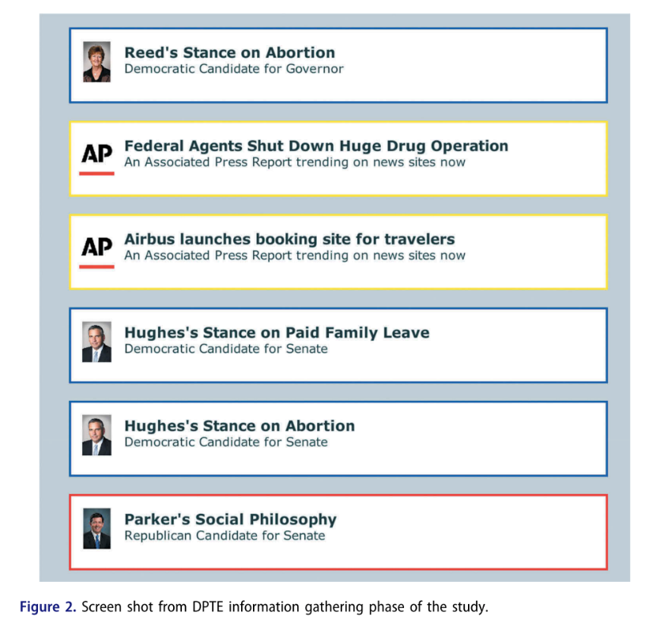
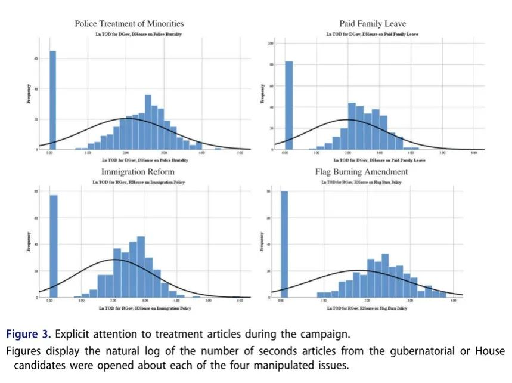
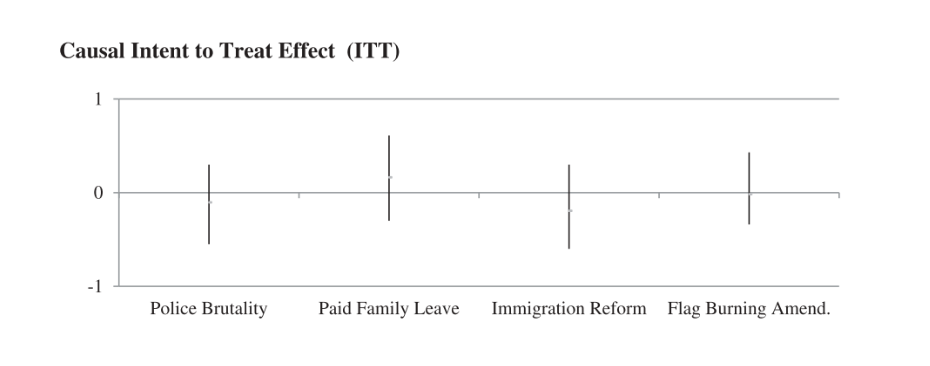
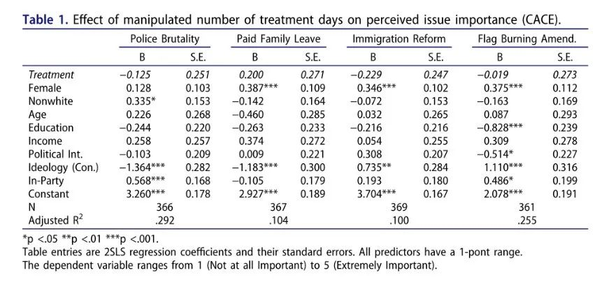
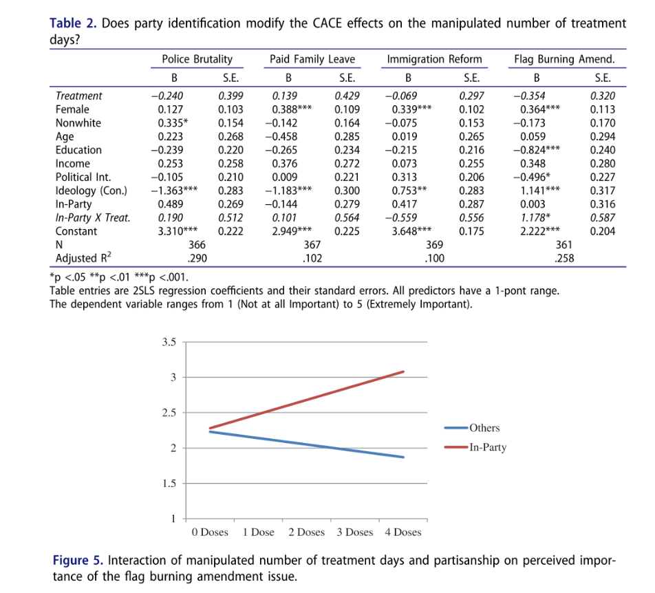
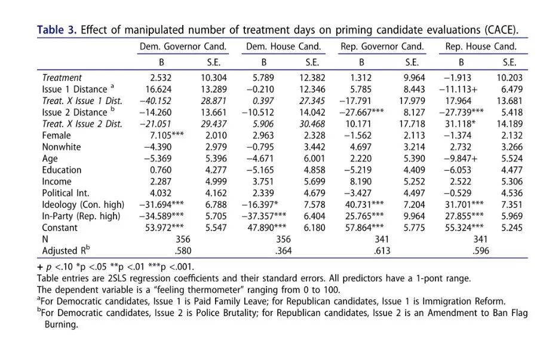

收录于合集 #政治传播 12个
文献来源： Lau, Richard R., Kathleen Rogers, and Jamel Love. “Media Effects in the Viewer’s Choice Era: Testing Revised Agenda-Setting and Priming Hypotheses.” Political Communication (2020): 1-23.
作者简介：
****Richard R. Lau，罗格斯大学政治学系教授，研究领域为政治认知与政治决策、竞选中的媒体效应、舆论与政治说服等。
Kathleen Rogers，罗格斯大学政治学系博士研究生，研究兴趣为政治符号、政治心理等。
Jamel Love，罗格斯大学政治学系博士研究生，研究兴趣为美国政治和方法论。
左起依次为：Richard R. Lau，Kathleen Rogers和Jamel Love
研究动机
“议程设置（agenda-setting）假设” 也许是关于媒介效果最著名的理论假设，即媒体也许不能告诉我们该怎么想问题，但它的确能够告诉我们该想什么问题（McCombs & Shaw, 1972）。然而，这一假设的证明至今仍面临反向因果和第三变量这两大挑战，故而迄今围绕媒介效果最令人信服地证据仍然来自实验室实验。
对议程设置假设最知名的检验是由Iyengar和Kinder(1987)完成的，对一系列实验组和对照组进行的为期六天的实验。通过迫使受访者连续观看经过处理的新闻节目并对比其实验前后对诸多政治问题重要程度的认知，两位学者给予了议程设置假设以明确的因果证据，并提出了媒体影响政治的另一方式：启动（priming）——通过报道一些话题，淡化或忽略其他话题，媒体塑造了公众评价政府绩效的标准。
本文对这一实验提出了两个批评。首先，这一实验的处理远远偏离现实生活——并没有多少人每晚观看如此巨大“剂量”的新闻。这就导致Iyengar和Kinder所证明的是一种“最大化”的议程设置效应：如果每人都接触足够多的新闻，议程设置效应就能被观察到。换句话说，这一因果效应只存在于“连续四天接受处理”和议程设置效果之间。而现实是许多选民并不会遵循实验室中的这一处理。
另外一个更重要的批评则是，它们所处的广播新闻媒体统治的世界已经成为历史。随着有线电视和互联网的发展极大增加了媒体的可选择性，我们如今处于受众选择的时代——人们可以从近乎无限多的选项中选择接触什么、忽略什么，以塑造属于自己的媒体环境。这就导致媒体和政治精英在广播新闻时代赖以影响公众议程的能力受到了很大限制。
为了探索受众选择时代的议程设置与启动效应，本文设计了如下实验。实验模拟了10天的非选举年竞选活动。受试者被要求在州长、众议院以及参议院（仅一半受试者进行）选举中投票。在第2~9天，受试者通过虚拟的系统了解虚构的候选人在不同问题上的立场，并在第10天进行投票。此期间候选人讨论四个不同问题（两个典型的民主党议题与两个典型的共和党议题）的频率被随机操作。在整个实验过程中，受试者不会被迫看任何特定的信息，这在很大程度上模拟了现实选举过程中的媒体信息环境。利用这一实验所收集的数据，作者检验了经典的议程设置、启动假设和修正的议程设置、启动假设：
H1 经典的议程设置假设：媒体报道一个问题越频繁，受众越认为它重要。
H2 经典的启动假设：媒体报道一个问题越频繁，其信息越容易被记忆，选民在该问题上于候选人立场的一致性将影响其对该候选人的评价。
H1R 修正的议程设置假设：媒体报道一个问题的频率几乎不影响人们对该问题重要性的感知，如果有影响，则影响将局限于同党派人士。
H2R 修正的启动假设：选择性接触对广泛的启动效应有限制作用。
**** 方法
实验对象是团队2017年2月从Amazon’s Mechanical Turk招募的400名受试者。共有371个样本达到了实验要求，其中包括51%的女性，16%的有色人种，56%的大学毕业生，样本的平均年龄为34岁。同时包含47%的民主党人和21%的共和党人。
受试者被引导访问事先开发的“动态过程追踪环境（DPTE）”网页进行实验中政治信息的获取。在第1天实验中，实验对象被要求回答关于政治立场、媒体使用、政治参与、政治知识以及人口背景的问卷，并对20个政治问题表达了观点，对其中17个进行了重要程度评分，其中就包括本实验要进行操作的4个问题。最后，受试者使用DPTE收集2012年大选的政治信息，作为此次信息收集的练习。
在第2~9天，DPTE网站模拟竞选期间的信息流以供受试者进行选举信息获取。如图2所示，该系统使不同的信息滚动播放于网站首页，点击每一个标签即可详细阅读这则信息的内容。

在竞选活动期间，每天会有45~49条信息随机呈现，受试者可以自由选择打开哪些信息进行查看，也可以只看标题在页面滚过而不打开任何信息。但详细阅读某条信息时，信息的滚动仍在后台进行——详细了解任何一条信息都要付出放弃打开其他部分信息的代价。很真实地还原了信息过多的现实媒体环境。
实验设计
对议程设置的操作发生在竞选活动的第3、5、7、9天，在这些天里，受试者进入系统后都要抛两次硬币。其中一次决定了当天的信息是否包括民主党候选人关于带薪休假或警察对少数族裔暴力问题的立场，另一次则决定了当天的信息是否包括共和党候选人对禁止焚烧国旗的宪法修正案或移民改革的立场。这样一来，所有受试者就暴露在了不同的竞选信息环境中：一些人接触这些议题次数更多，一些人接触更少，而一些人则根本没有接触。除上文两对问题外，其他政治问题在竞选过程中只出现1次。这一操作提供了四组议程设置测试，两组围绕典型的民主党议题，两组围绕典型的共和党议题。
DPTE平台的性质反映了作者对如今“议程设置处理”的定义：今天的议程设置表示的是某一议题的信息的相对易得性（relative availability），即阅读到该类信息的机会更大。反映到本次实验中，经处理的四个议题由于有机会重复出现，其易得性相对于仅出现一次的其他议题要大得多。如果议程设置假设成立，那么这种信息的不成比例就会传递某些议题更加重要的信息。
总之，这一实验对信息的易得性和受众所处的信息环境进行了操控，而非如既往实验一般操控受试者具体的信息接触。另外，这一实验种包含观看滚动标题和点击阅读详情这两种接触模式。由此能够对单纯的议题接触和对议题的关注进行区分，也是本实验的一大优势。
结果
1. 问题关注与依从性
作者的分析从受试者对被操作问题的明确关注开始。如果受试者在第3、5、7、9日登录系统，他们就有机会接触到经过处理的两对问题，但也未必会打开看。图3显示了全部受试者打开经处理的四个问题有关信息的时间分布，横坐标为阅读时间的自然对数，纵坐标为该时间出现的频数。

在对“明确关注”变量与实验第10天受试者对这些问题重要性的认知进行回归后作者发现，除警察对待少数族裔问题外，受试者对其余三个经过议程设置处理的问题重要性的感知都增加了。但由于“明确关注”是在实验中被观察到的，而非实验本身的操作，因而不能称其为因果效应，尽管这一结果也是符合议程设置的假设。
由于可选择性是当今媒体环境中无法忽视的特征，所以“今天不看政治”从来都存在于选民（实验对象）的选项之中。在实验处理的第3、5、7、9天里，约80%的受试者登录了系统，并接受了随机“剂量”的议程设置影响。这一方面意味着实验仅获得了80%的议程设置处理效果，必然降低了议程设置操作的强度；另一方面，这正反映了日常生活中的媒体世界。现实中，53.4%的选民每天关注选举信息的情况更可能出现在选举年而不是非选举年，这意味着这一实验甚至高估了实际非选举年中议程设置的效果。
2. 议程设置效应分析
在对经典议程设置假设进行检验的分析中，忽略受试者的依从性而进行的因果效应的意向治疗分析（ITT），其结果如下图所示：四个议题上议程设置的影响均不显著，甚至有三个议题系数为负。也就是说候选人讨论这一议题越频繁，受试者最终越认为其不重要。

考虑到这一结果可能受到受试者依从性的影响，作者进行了“依从者平均因果效应（CACE）分析：先将受试者实际接受的“剂量”与他们应受的“剂量”进行回归，用回归预测的分数作为工具变量加入到对“依从者”子样本的因果分析中(Gerber & Green, 2012)。二阶段回归如表1所示。可见CACE分析的结果与ITT分析并无明显区别。

对修正的议程设置假设——议程设置的效果将局限于议程设置者同党派的群体——进行检验的方法则是交互项分析：将议程设置变量乘以“是否为同党派”的虚拟变量。结果如表2所示，尽管交互项的系数多数为正，但在焚烧国旗议题中的交互效应是显著的。这使得这一分析对修正的议程设置假设的支持非常有限。然而，如图5所示，议程设置对党内人士的效果在直观上非常明显。

3. 启动效应分析
作者随后测试了一般意义上的启动效应：接触经处理的议题越多，是否使得这些议题成为受试者评价候选人时更为重要的依据。测试仍然基于一系列OLS回归，因变量为第10天对候选人的感情评估，自变量包括受试者对特定问题（如带薪休假）的态度与候选人在同样问题上态度的距离，其所接受的议程设置处理剂量，以及以上二者的交互项。态度距离值应该与因变量存在负相关，而如果启动效应成立，态度距离和议程设置的交互项系数应为负——议程设置削弱了态度距离与对候选人感情之间的负相关。分析结果如表3所示。可见，对州长进行评价时，交互项的系数为负，符合启动假设；而对众议院代表进行评价时，交互项的系数为正，不符合启动假设。

4.稳健性检验
上述分析的稳健性面临的挑战有：1.特定问题被提上议程的时间先后造成受试者记忆的强弱可能影响分析结果；2.可能存在的非线性关系；3.可能存在其他更优的分析方法，如方差分析等。针对此三者进行的稳健性检验结果表明，至少在10天内，受试者的记忆力不会对结果造成显著影响，也没有证据表明变量间存在非线性的关系，方差分析也未对假设的检验提供额外的支持。
5.结论与讨论
以Iyengar和Kinder为代表的强迫接触研究（Forced exposure studies）越来越不适用于媒体环境的现实变化。本研究以模拟现实选举和信息获取模式的实验，牺牲些许内部效度换取了更大的外部效度，对修正的议程设置假设和修正的启动假设进行了检验。研究发现：
1.对议题的关注和阅读与对问题重要性的感知呈正相关。但这一发现于本实验的处理并无关系。
2.修正的议程设置假设在部分议题中得到了支持，即议程设置的效果局限于和设置者同党派的人士。但此假设仍需要更多证据的支持。
3.修正的启动假设在州长竞选中得到了支持，在众议员选举中则相反。这可能是由于州长在不同问题上的立场被提及的频率远高于众议员，有待进一步研究。
本研究源与对强迫接触研究可能存在缺陷的反思，但研究本身同样存在局限。尽管作者尽可能地将实验模拟为现实的选举，但终究无法于现实选举中竞选活动和真正的媒体报道强度相匹配。另外，本实验的信息都是平衡的新闻，而极端的消息来源所造成的情感极化本身就可能加强议程设置效果（Lau et al. ,2017），若增加信息来源和框架的丰富性，本实验可以获得更高的外部效度。最后，尽管实验选在现实政治相对平淡的时期进行，作者依然无法避免现实政治和媒体讨论对实验对象的影响，尤其是在美国有一位媒体议程主导能力如此之强的总统的情况之下。
本文对议程设置和启动效应所提供的证据支持是不完整且相对矛盾的，但其对政治传播乃至社会科学研究中实验方法的反思可谓一大亮点。给实验对象施加现实中几乎不可能发生的影响所得到的实验结果，足以成为证实理论假设的证据吗？实验的内部效度与外部效度应如何平衡？本文为这两个问题提供了有价值的参考。
编译：殷昊 审校：杨端程 编辑：郭静远
【政文观止Poliview】系头条号签约作者